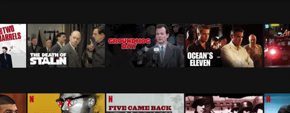

O design da página de navegação da Netflix permaneceu bastante semelhante há alguns anos. Um componente principal é o controle deslizante de visualização que permite aos usuários rolar o conteúdo e passar o mouse nos itens para ver uma visualização.
Uma característica exclusiva da interface do usuário é seu comportamento de foco instantâneo. Quando uma visualização de programa se expande ao passar o mouse, as cartas ao lado são empurradas para fora para que não se sobreponham.
Como isso:
Podemos fazer isso em CSS! Sem JavaScript. Sem dependências. CSS simples. Mas antes de entrar em qualquer código, aqui está exatamente o que queremos fazer:
- O cartão que passa o mouse deve se expandir, mantendo sua proporção.
- Quando um cartão é pairado, os outros cartões não devem mudar de tamanho e se mover para fora para que não se sobreponham.
- Todos os cartões devem permanecer centralizados verticalmente um com o outro.
Parece bom? Agora vamos entrar no código.
HTML e elementos flexíveis
Vamos configurar uma linha de imagens que representam as visualizações de vídeo da Netflix. Isso inclui:
-
Um
.containerelemento pai com vários.itemelementos dentro -
Cada
.itemelemento que consiste em uma imagem envolvida em uma marca de âncora -
Transformando
.containerem um contêiner flexível que alinha os itens em uma linha -
Definir o comportamento flexível da
.itemclasse para que ocupem o mesmo espaço na linha
See the Pen Netflix Style Hover Effect 1 by chris geel (@RadDog25) on CodePen.
Expandindo um item ao passar o mouse
Nosso próximo passo é fazer com que um item seja expandido quando passar o mouse. Poderíamos fazer isso animando os elementos width, mas isso afetaria o fluxo do documento e reduziria os irmãos do item pairado - além disso, animar a width propriedade é conhecido por ser fraco em termos de desempenho em alguns casos.
Para evitar apertar o irmão do item pairado, vamos animar a transform propriedade - especificamente, sua scale() função -. Isso não afetará o fluxo de documentos da mesma maneira width.
See the Pen Netflix Style Hover Effect 2 by chris geel (@RadDog25) on CodePen.
Movendo irmãos para fora
Fazer com que os irmãos de um item pairado se afastem do item pairado é a parte complicada de tudo isso. Um recurso CSS que temos à nossa disposição é o combinador geral de irmãos . Isso permite selecionar todos os itens irmãos posicionados após o item pairado.
Voltaremos à função transform da propriedade translateX() para mudar as coisas. Novamente, a animação transform é muito melhor do que outras propriedades que afetam o fluxo de documentos, como margens e preenchimento.
Como configuramos um item para aumentar em 150% o foco instantâneo, a tradução deve ser definida em 25%. Isso é metade do espaço adicional que está sendo ocupado pelo item pairado.
.item:hover ~ .item {
transform: translateX(25%);
}
Isso lida com mover as coisas para a direita, mas como podemos traduzir os itens à esquerda ? Como o combinador geral de irmãos se aplica apenas a irmãos posicionados após um determinado seletor (sem retroceder), precisaremos de outra abordagem.
Uma maneira é adicionar uma regra de focalização adicional no próprio contêiner pai. Aqui está o plano:
- Ao passar o mouse pelo contêiner pai, mova todos os itens dentro desse contêiner para a esquerda.
- Use o combinador geral de irmãos para fazer com que os itens posicionados após o item pairado sejam movidos para a direita.
- Seja super específico para que um item pairado não seja traduzido como o restante dos itens.
Estamos assumindo que seu documento usa o modo de escrita da esquerda para a direita. Se você deseja usar esse efeito em um contexto da direita para a esquerda, precisará definir todos os itens dentro do contêiner externo pairado para mover para a direita e usar o combinador geral de irmãos para mover todos os itens selecionados para a esquerda .
See the Pen Netflix Style Hover Effect Final by chris geel (@RadDog25) on CodePen.
Um pequeno detalhe a ser observado: esta versão final está usando :focuse :focus-within pseudo-classes para suportar a navegação do teclado. O exemplo da Netflix não está usando, mas acho que é um toque agradável de acessibilidade.
Lá nós temos! Sim, poderíamos ter usado ouvintes de eventos JavaScript em vez de regras de foco CSS., E isso poderia ser melhor para manutenção e legibilidade. Mas às vezes é divertido ver até onde o CSS pode nos levar!
Tutorial feito por Css-tricks
Confira o post original aqui.